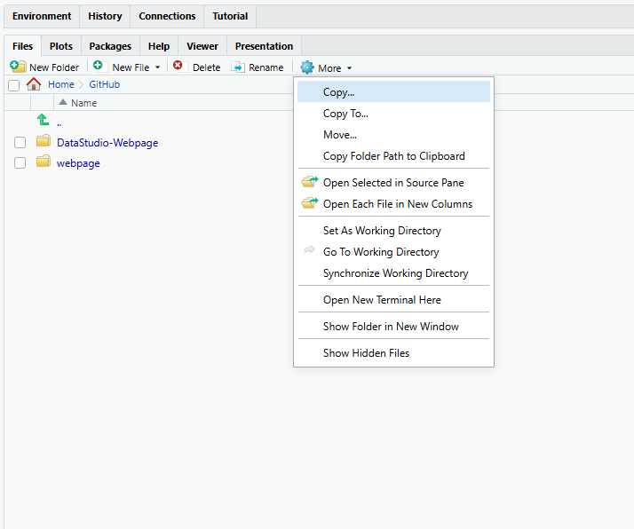
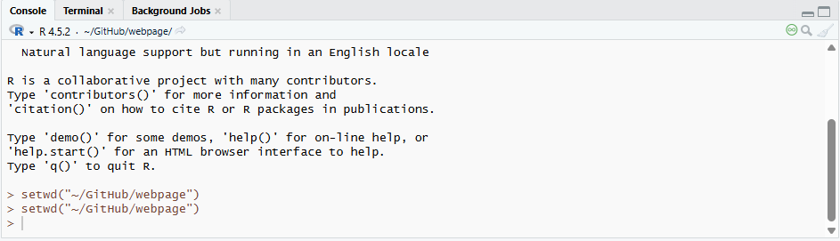

Rでよくあるエラー10選
今回は、特に初心者にありがちなエラーを10個選んで解説していきます。
慣れてきた頃にもやりがちです。特に1と９。でもなれるとすぐに原因がわかり、すぐに直せるようになるので、何度も挑戦しましょう。
1. object ‘x’ not found
これは本当によくあります。直すのはものすごく簡単で、
x = 8など、xに何かを割り当てれば終わりです。
もう一つの原因はスペルミスです。自分の場合は、特にオブジェクトの名前を無駄に長くしてしまった時にあります。
オブジェクトの名前が、例えばxではなくreinasdatastudioの場合で、スペルミスをしてしまった時は、
object 'reinasdatastudi' not foundなどと、自分が打ったスペルミスが表示されるので、しっかり確認してみてください。
| エラー | Error: object ‘x’ not found |
| 意味 | 指定したオブジェクト（変数やデータ）が存在しません。 |
| よくある原因 |
|
| 解決方法 | オブジェクトが存在するか確認します。 また、スペルミスがないか確認します。 |
2. unexpected symbol
| エラー | Error: unexpected symbol |
| 意味 | コードの構文が正しくありません。 |
| よくある原因 |
|
| 解決方法 | コードの構文を確認します。 特にカッコやコンマの位置をチェックします。 |
3. argument is missing, with no default
例えばfunction（関数）を使うときに、
my_func <- function(x,y)なのに、間違えて
my_func(1, )
や
my_func(1)など、その関数にあったargument（引数）が使われていない時のエラーです。
この例の場合、正しいのは
my_func(1,2)など、xとyが何なのかを指定しないといけません。
| エラー | Error: argument is missing, with no default |
| 意味 | 関数に必要な引数が指定されていません。 |
| よくある原因 |
|
| 解決方法 | 関数の引数を確認します。 |
4. non-numeric argument to binary operator
たまに、数字に見えてもRはそれをstringなどと認識している場合があるので、ちゃんとclassがnumericなのを確認しましょう。
| エラー | Error: non-numeric argument to binary operator |
| 意味 | 数値ではないデータに対して計算を行おうとしています。 |
| よくある原因 |
|
| 解決方法 | データ型を確認します。 必要なら数値に変換します。 |
5. cannot open the connection
これは最初はすごく複雑です。わかりやすく説明しますと、
Rが指定されたファイルを見つけられない、または開けないときに出ます。
一番よくある原因は、Rに伝えたファイルの場所が、今作業中のフォルダの中にないときです。例えば、
read.csv("data.csv")でファイルを開こうとしても、Rが今作業しているフォルダ、すなわちDirectoryにそのデータファイルがないとRはそれを開けません。
RStudioを開けた時の右側のMoreと書かれているギアアイコンをクリックすると、今どこのDirectoryで作業しているのかを確認できます。Go To Working Directory（今作業中のDirectoryに行く）をクリックすれば、Rが今見ているフォルダーを開いてくれます。
違うDirectoryに変えたい場合は、作業したいフォルダーに行ってから、Set As Working Directory（このフォルダーをDirectoryにする）をクリックしてください。

これらのステップをコンソールでしたいなら、以下の通りsetwdでDirectoryにしたいフォルダーの場所(Path)を指定します。

経験上自分が一番最初てこずったエラーです。
ほかの原因は、データファイルのスペルミス、ダブルクォーテーション（””）の入れ忘れなどもあるので、ちゃんとファイルの名前が正しく書かれているか確認しましょう。
| エラー | Error: cannot open the connection |
| 意味 | ファイルやURLを開くことができません。 |
| よくある原因 |
|
| 解決方法 | 現在の作業ディレクトリを確認します。 getwd() 必要なら変更します。 setwd(“path”) |
6. object of type ‘closure’ is not subsettable
あまり聞かないエラーですが、例えば変数（Variable）の名前が関数（Function）の名前と同じだったりした時にでます。Rが変数を関数と勘違いしてしまいます。
| エラー | Error: object of type ‘closure’ is not subsettable |
| 意味 | 関数をデータのように扱っています。 |
| よくある原因 | 関数名とオブジェクト名が同じ。 |
| 解決方法 | 関数ではなくデータを指定します。 |
7. replacement has length zero
| エラー | Error: replacement has length zero |
| 意味 | 空の値を代入しようとしています。 |
| よくある原因 |
|
| 解決方法 | データの長さを確認します。 |
8. subscript out of bounds
７同様、まだシンプルなエラーですね。
| エラー | Error: subscript out of bounds |
| 意味 | 存在しない位置の要素にアクセスしています。 |
| よくある原因 | データのサイズより大きい番号を指定している。 例：x[10] （データが5個しかない場合） |
| 解決方法 | データのサイズを確認します。 length(x) |
9. could not find function
| エラー | Error: could not find function |
| 意味 | 関数が見つかりません。 |
| よくある原因 |
|
| 解決方法 | パッケージをロードします。 library(dplyr) |
10. NA/NaN argument
ちなみに、欠損値があるか確認する方法は複数あります。
anyNA(data)はデータの中に欠損値があればTRUE、なければFALSEが出ます。
sum(is.na(data))は、何個TRUE、つまりNA/欠損値があるか確認します。
そしてデータのコラムごとに確認したい場合は、
colSums(is.na(data))と入力するとどのコラムに何個NAがあるか確認できます。
| エラー | Error: NA/NaN argument |
| 意味 | 計算にNAやNaNが含まれています。 |
| よくある原因 | データに欠損値がある。 |
| 解決方法 | NAを除外して計算します。 |
説明が分かりにくかったり、質問があれば、ぜひ教えてください。
たくさんの人とRを通じて、Rのすばらしさや面白さをシェア出来るのを楽しみにしています！
他にもRのことで質問や相談があれば、気軽にご連絡ください。
日本語でRコンサルティングをしています。
Email: reinasdatastudio@gmail.com